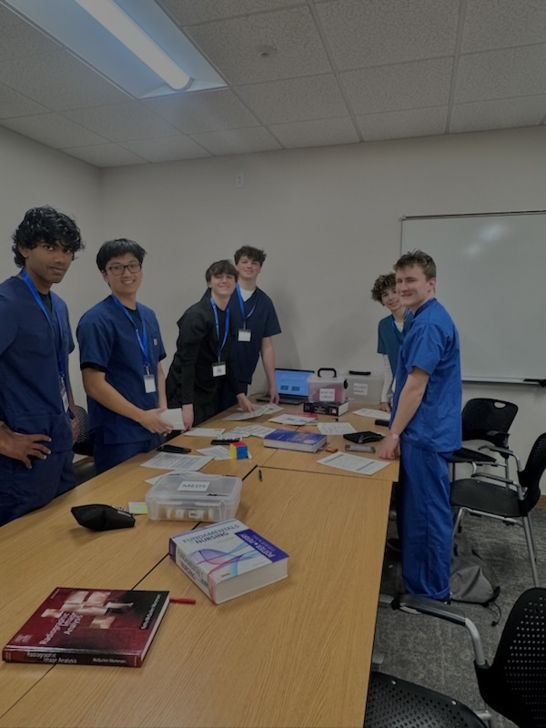
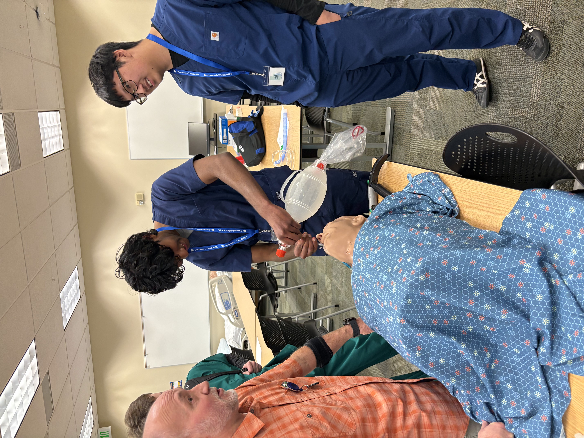

Crossroads Utah AHEC Internship
I interned at Crossroads Utah AHEC. It is a program that introduces high school students to healthcare careers by visiting hospitals, job shadowing, and hands-on skill labs. I observed different medical departments and participated in educational activities with healthcare professionals to explore career paths in medicine and public health.


Technical Skillset I Learned: Endotracheal Intubation
During the internship, I learned the technical skill of endotracheal intubation. This procedure involves inserting a tube into a patient's airway to assist with breathing. Using a camera-guided device, the tube is carefully placed into the trachea, and a small balloon can be attached to manually push air and oxygen into the lungs. I practiced this procedure on a mannequin, gaining hands-on experience with tube placement, airway management, and delivering breaths using a manual resuscitation bag.


Para 3 content goes here describing another experience or skill learned.

Connection between the internship experience and an academic class
One of the tasks I did during my internship was a pig heart dissection. This hands-on activity allowed me to explore the anatomy of the heart, understand how blood flows through the chambers, and observe the valves and vessels firsthand. This hands-on dissection directly connected my internship experience to concepts learned in Biology class, such as circulatory system anatomy and blood flow.